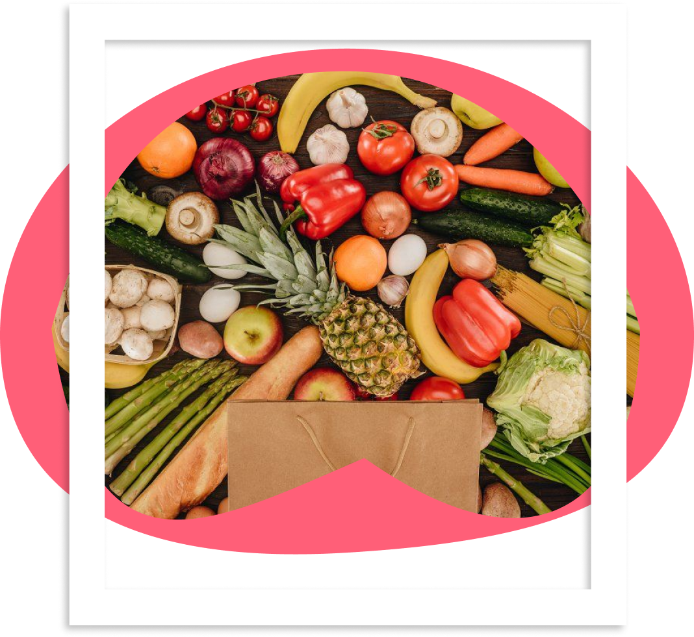

Frutódromo
Conheça sobre todas as frutas do mundo!
O Frutopedia, também conhecido como Frutódromo, é um site dedicado a fornecer informações abrangentes
sobre todas as frutas do mundo. O site tem como objetivo fornecer uma fonte confiável e acessível
de conhecimento sobre frutas, ajudando as pessoas a conhecerem melhor as diferentes variedades,
suas origens, propriedades nutricionais, características de cultivo e muito mais.


